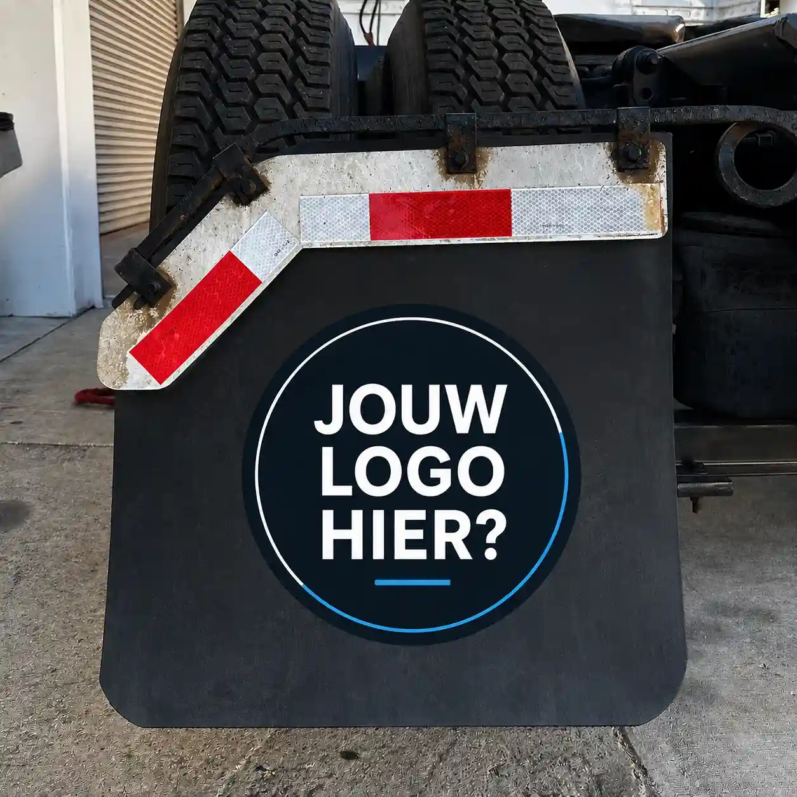
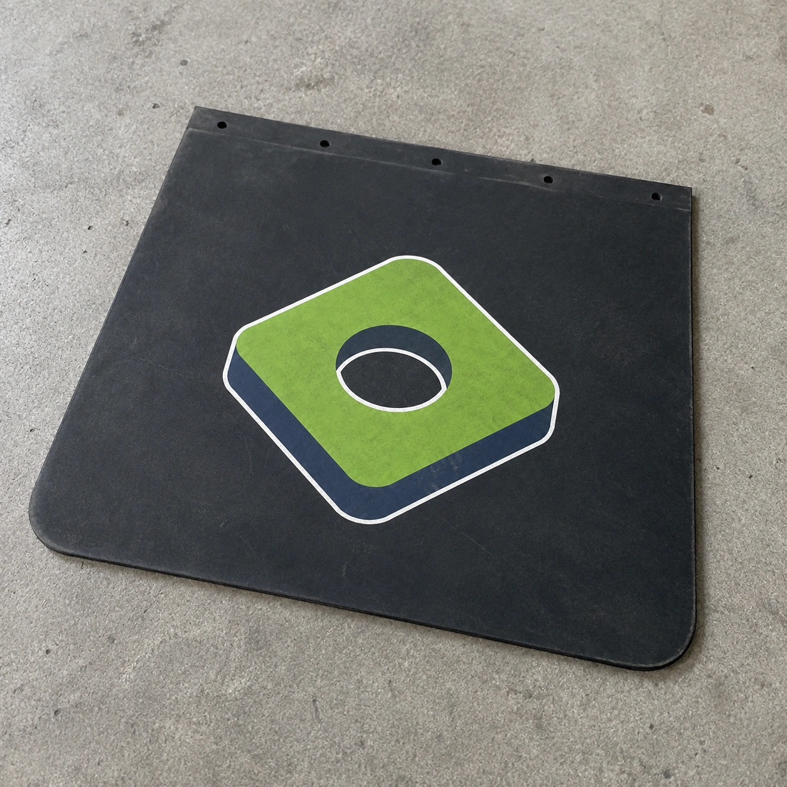
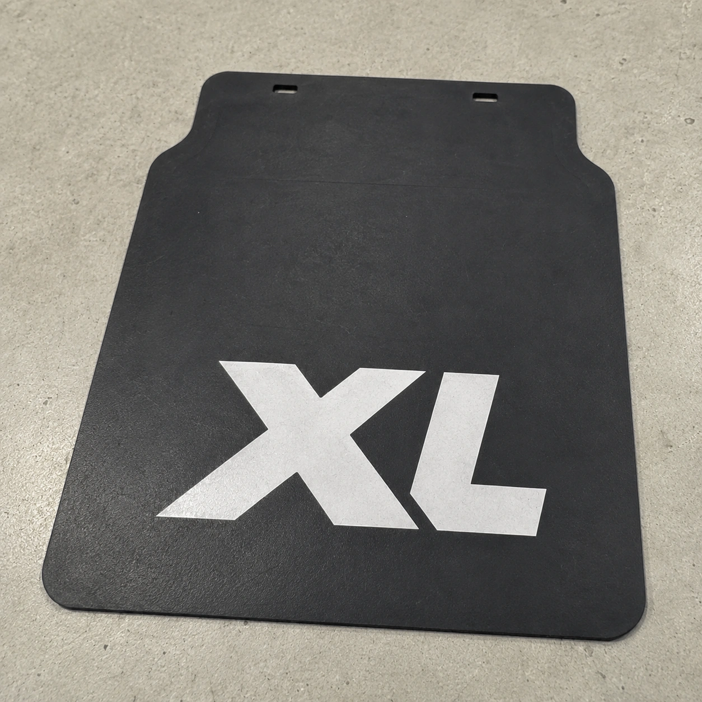
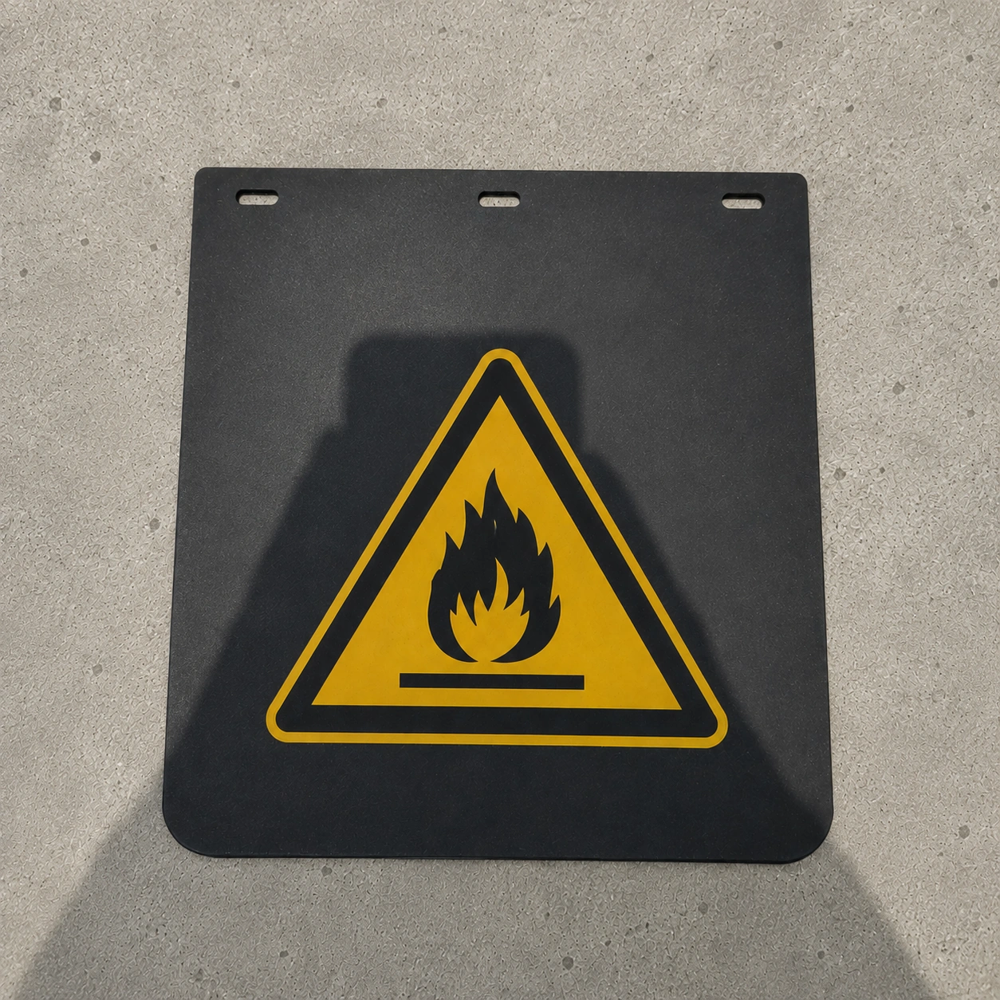

Vrachtwagens en trekkers
Bij spatlappen op maat voor vrachtwagens en trekkers kunnen de buitenmaat, vorm en bevestigingsgaten worden afgestemd op de bestaande montagepunten. De uitvoering kan blanco zijn of een bedrijfsnaam, tekst of logo krijgen.
Wij maken spatlappen in vrijwel iedere maat en vorm, vanaf één stuk en met je eigen tekst, logo of ontwerp. De gaten, sleuven en contour stemmen we af op je vrachtwagen, trailer of aanhanger.




Een gepersonaliseerde spatlap is meer dan een standaardmodel met bedrukking. We combineren je logo, tekst of ontwerp met de maat, vorm en bevestiging die het voertuig nodig heeft.
De breedte, hoogte en contour hoeven niet uit een standaardmaat te komen. Rondingen, uitsparingen en de positie van gaten of sleuven kunnen worden gebaseerd op de beschikbare ruimte, een bestaande spatlap, een schets of een technische tekening.
Op de spatlap kan een bedrijfslogo, naam, webadres, slogan of voertuignummer worden aangebracht. Ook een blanco uitvoering is mogelijk. Dat geldt voor één vervangende spatlap, een complete set of dezelfde uitvoering voor meerdere voertuigen.

Laat je bedrijfslogo op één spatlap of op een complete serie aanbrengen. We stemmen formaat, positie en kleuren af op de vorm en het gatenpatroon van de spatlap.
De beschikbare ruimte bepaalt hoe groot het logo kan worden en waar het wordt geplaatst. Daarbij houden we rekening met de contour, bevestigingsgaten en leesbaarheid. Of bedrukking in meerdere kleuren mogelijk is, hangt af van het ontwerp, materiaal en formaat.
Een vectorbestand in PDF of SVG heeft de voorkeur, omdat dit zonder kwaliteitsverlies kan worden aangepast. Heb je alleen een PNG, foto of voorbeeld van een bestaande spatlap, stuur dat dan mee. We laten weten wat bruikbaar is en of het bestand nog moet worden voorbereid.
Logo meesturen voor een prijsvoorstel
Laat een bedrijfsnaam, webadres, korte slogan, kenteken of voertuignummer op de spatlap aanbrengen. De beschikbare breedte en hoogte bepalen de lettergrootte en regelindeling.
Een korte tekst kan groter worden uitgevoerd. Bij een langere tekst bekijken we of een tweede regel past zonder dat de letters onnodig klein worden. Stuur de exacte spelling, gewenste kleuren en eventueel een voorbeeld van het lettertype of de huisstijl mee.
Eigen tekst doorgevenDe beschikbare ruimte en bevestiging verschillen per voertuig. Daarom stemmen we de maat, contour, het gatenpatroon en de eventuele bedrukking af op de toepassing.
Bij spatlappen op maat voor vrachtwagens en trekkers kunnen de buitenmaat, vorm en bevestigingsgaten worden afgestemd op de bestaande montagepunten. De uitvoering kan blanco zijn of een bedrijfsnaam, tekst of logo krijgen.
Bedrukte spatlappen voor trailers en opleggers kunnen voor één voertuig of als gelijke serie worden uitgevoerd. De afmetingen, bevestiging, positie van het logo en de kleuren blijven daarbij gelijk.
Gepersonaliseerde spatlappen voor aanhangers maken we als enkel exemplaar of als complete set in de benodigde maat en vorm. Een bestaande spatlap, foto of schets kan als uitgangspunt voor de bevestiging dienen.
Bij maatwerk spatlappen voor speciaal vervoer en voertuigbouw zijn een eigen contour, uitsparingen en een specifiek gatenpatroon mogelijk. Daarnaast kan de spatlap een waarschuwingsteken, voertuignummer, tekst of bedrijfslogo krijgen.
We leveren een spatlap op maat ook vanaf één stuk. Dat is praktisch als een beschadigd exemplaar moet worden vervangen, een standaardmaat niet past of één voertuig een afwijkende uitvoering nodig heeft.
Een enkel exemplaar kan blanco, met tekst of met een logo worden uitgevoerd. Voor het namaken kan een oude spatlap, technische tekening of foto met maten als uitgangspunt dienen.
Vraag een prijs voor één stuk aanEr is geen vaste standaardprijs. De maat, het materiaal, de contour, gaten of sleuven, bedrukking en het aantal bepalen samen de prijs.
Voor iedere maatwerkorder zijn vaste voorbereidingen nodig. Het ontwerp en de maatvoering worden gecontroleerd, bestanden worden productieklaar gemaakt en de productie wordt ingesteld.
Wanneer je meerdere gelijke spatlappen bestelt, worden deze vaste kosten over de oplage verdeeld. Daardoor daalt de prijs per spatlap doorgaans naarmate het aantal toeneemt. Ook één exemplaar blijft mogelijk.
Ontvang een prijsvoorstelStaat jouw vraag er niet tussen? Stuur een foto of korte omschrijving, dan kijken we mee.
Vrijwel iedere maat en vorm is mogelijk. Ook contouren, uitsparingen en de positie van bevestigingsgaten kunnen in het maatwerk worden meegenomen.
Voor een eerste beoordeling zijn een foto, schets of bestaande spatlap, de globale maat en het gewenste aantal voldoende. Voeg voor bedrukking ook het logo of de exacte tekst toe. Een technische tekening is vooraf niet verplicht.
Ja. We kunnen een anti-spray-uitvoering leveren en de bevestigingsgaten vooraf aanbrengen. Het gatenpatroon stemmen we af op de maten of het aangeleverde voorbeeld.
Ja. De spatlap kan ook volledig blanco worden uitgevoerd, met alleen de gewenste maat, vorm en bevestigingspunten.
Vermeld het voertuigtype, de globale maat, het gewenste aantal en of je een logo, tekst of blanco uitvoering wilt. Een foto, schets, oude spatlap of ontwerpbestand kun je direct meesturen.